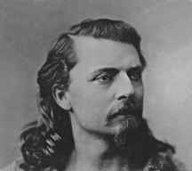
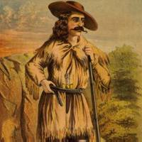
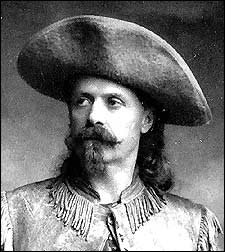
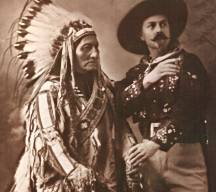

|
There are many reasons why William
F. Cody, also known as Buffalo Bill, gave the American West its name.
William Cody was a Pony Express rider, buffalo hunter, Indian fighter, army
scout, and an international showman. In his lifetime Cody was a living
example of rugged Americanism.

|
| William Cody was born in Scott County,
Iowa, in 1846. When his mother moved to Kansas after his father’s death
in 1857, Cody worked for a wagon freight company as mounted messenger, and
wrangler. |
| Are you aware that in 1859 he quit
this job and went to prospect gold in Pikes Peak, Colorado. William
did not have much luck at this so the following year at age fourteen he started
work for the Pony Express. |
| It is said that Cody set a record
that was unsurpassable. He did this by riding three hundred and twenty-two
miles in twenty-one hours and thirty minutes. He did this while using
just twenty-two horses en route. |
| During the Civil War he served as
a Union scout in campaigns against the Kiowa and Comanche tribes |
| After the Civil War in 1863 Cody enlisted
in the seventh cavalry, which fought in Tennessee and Missouri. In
St. Louis on one expedition, Cody met a girl named Louisa Frederici.
He later on married her. |
| Historically in 1867 Cody started
work for the crews on the Kansas Pacific Railroads by giving and providing
buffalo meat. Cody killed four thousand two hundred and eighty buffalo
in seventeen months. It is said that he got the name ‘’Buffalo Bill’’
by winning a shoot-out on a buffalo campaign with William Comstock.
Whoever killed the most buffalo got the name.

|
| Interestingly enough in 1868 Cody
rejoined the army. He was chief of scouts for the Fifth Cavalry.
Altogether he fought in sixteen battles one of them was the Cheyenne defeat
at Summit Sprin Interestingly enough in 1868 Cody rejoined the army.
He was chief of scouts for the Fifth Cavalry. Altogether he fought
in sixteen battles one of them was the Cheyenne defeat at Summit Springs
in 1869.gs in 1869. |
| In 1872 Cody was awarded the Congressional
Medal of Honor for bravery during a campaign with the Indians and for all
the years he spent in the U.S. army. Years later, he had to return
the medal when the Congress said the recipients must be members of the U.S.
army not civilians. |
In my experience Buffalo Bill
Cody was known as the best Buffalo hunter on the Great Plains there ever was.
So the Grand Duke Alexis of Russia at age nineteen came to ask Buffalo Bill
to take him on a buffalo hunt in 1872. It was planned that Cody would
lead the wagon train. Buffalo Bill Cody knew several famous Indians
and convinced a famous Sioux Indian named Spotted Tail and his followers
to join in the hunt. When explained to Spotted Tail about the hunting
expedition he said, ’’Great White man wants a big hunt with the Indians.’’
Cody Also asked the Indians to entertain the Duke. They agreed and
the Duke had a great time especially when they went on a crazy stagecoach
ride behind six wild horses with Cody holding the reins.

|
| Altogether that was the best and most
famous buffalo hunt ever. Today though, only a few of the woodland
bison live and twenty thousand plains bison live today. Buffalo Bill
has gone down in history as the best buffalo hunter of all time. He
will also be known as the one of many that almost put the buffalo into extinction.
|
It’s hard to believe but in 1890 William
Cody was called to join the army ounce again. His orders were to restore
order with the Indian nations and their uprisings. He did this with
little trouble at all, that was the last time he was in the army.
Buffalo Bill’s Wild West Show |
|
Buffalo Bill's ''Wild West Show''
Buffalo Bill had an adventurous life, but that’s not
all that made him famous. In fact, show business made him famous all
around the world. |
| E.Z.C. Judson, who went by the name
of Ned Buntline, was a western writer that sold dime novels (short books
that cost ten cents). Buffalo Bill and Ned Buntline met one day and
made Cody a hero in many books. |
On a visit in New York City, he saw
a play based on his adventures.
Later on at his home in Nebraska Cody decided to go into show business.
So Ned Buntline out together a play and they produced a show, ’’The Scouts
of the Plains.’’ People praised Cody for his real life experience put
in a play. Some critics, however, thought it was ridiculous. |
Actually in 1883 Cody came up with
a knew show called Buffalo Bill’s ‘’Wild West Show.’’ It was an outdoor
theme designed to educate and entertain.

|
| For the ‘’Wild West Show’’ Cody got
some of his own troop of actors and started the show. Cody said those
were the ‘’Buffalo Bill Combination.’’ |
| When Buffalo Bill’s ‘’Wild West Show’’,
came to town people went crazy in order to see it. Before the show,
there was a parade, which included cowboys, Indians, soldiers on horseback,
and horse-drawn carriages. |
Are you aware that the biggest show ever happened in 1887 when they preformed
at Madison Square Garden in New York City, that included one hundred Indians,
Annie Oakley (a famous sharp-shooter), trick riders, ropers, shooters, and
many different kinds of animals. |
| Some people thought Buffalo Bill Cody
died of an epidemic poisoning, others think he died of just loneliness.
No one really knows how he died but he did die broke and in debt. Cody
died on January 10, 1917. |
|
| Its true that in 1885 buffalo bill
and some investors from Buffalo, New York, formed the Shoshone Land and the
Irrigation Company. They started to plan a town named Cody. In
1896 they succeeded and built and named the town Cody. |
It is amazing to think about how many
great Americans there were in our history. George Washington, our first
president and famous war general, Thomas Jefferson, the great inventor and
former U.S. president, and many others. Many people do not realize
that Buffalo Bill did not just kill buffalos; he was the one that gave American
West its name.
|
David Roth
Rossville
Junior High
Bibliography
|